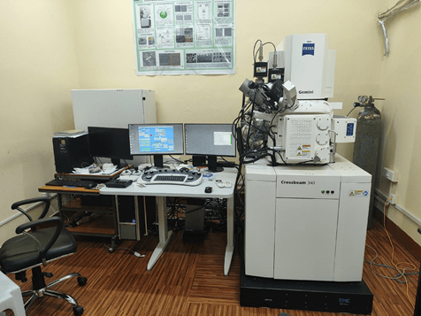
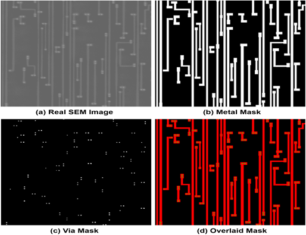
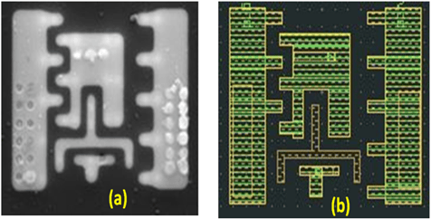
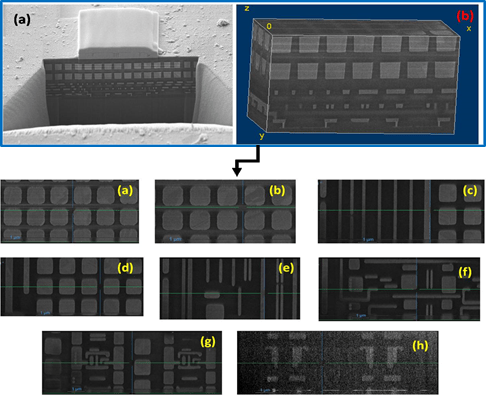
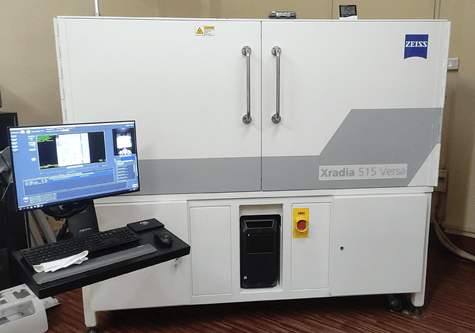
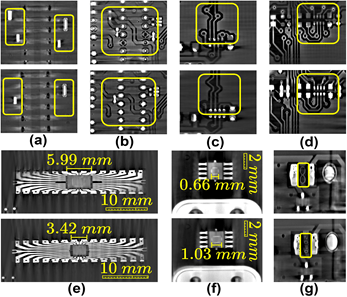
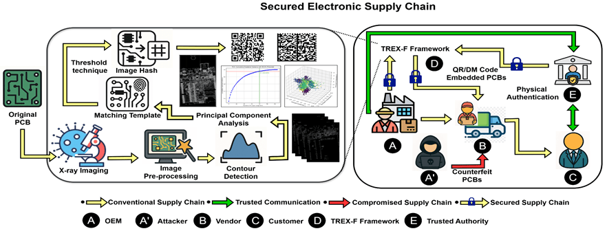

HARDWARE ASSURANCE SERVICES
FIB-SEM & XRM
imaging services
Sample preparation, failure analysis, 3D tomography, and reverse engineering — combining focused ion beam microscopy with non-destructive X-ray imaging.
01 — FIB-SEM
Focused Ion Beam – Scanning Electron Microscopy
A "dual-beam" system combining high-resolution imaging with a precise ion beam (typically Gallium) to remove or deposit material.

Sample preparation
Locally removing passivation layers, cutting or depositing conductive material to "rewire" or repair a chip.
- Precision cross-sectioning of ICs
- Delayering of metal layers & interconnects
- Trench milling & polishing
- Damage-controlled low-kV cleaning
Failure & root-cause analysis
Identifying voids, cracks, delamination, shorts and opens, and localizing process defects faster.
- Process defect localization in ICs & MEMS
- Golden vs. failed sample comparison
- Reduced turnaround time
3D tomography & reconstruction
FIB serial sectioning plus SEM imaging for structural validation and localized reverse engineering.
- Metal interconnect stacks, TSVs & vias
- MEMS structures
- Quantitative volume & connectivity analysis
Reverse engineering & hardware assurance
Extracting IC layout information by systematically delayering a chip to reveal wiring and standard cells.
- IC layout extraction & verification
- Hardware Trojan & counterfeit detection
- AI/ML-assisted SEM feature extraction

Standard-cell identification using GDS II matching

FIB section tomography — 3D reconstruction for localized reverse engineering

FIB section tomography enables us to perform 3D reconstruction of areas within the IC, for localized reverse engineering.
02 — XRM
X-ray Microscopy
Non-destructive imaging of internal geometries based on the density of materials — the sample stays intact for further analysis.
Non-destructive inspection
Detects hidden solder defects in BGAs and CSPs — bridges, shorts, cold soldering — without dismantling the board.
3D X-ray tomography
Identifies internal shorts, misaligned vias, and voids in multi-layer PCBs, with full volumetric 3D imaging.
Packaging & electronics inspection
Flip-chip, BGA and wire-bond inspection, TSV continuity checks, die-to-package misalignment analysis.
PCB fingerprinting
Physical authentication of PCBs using X-ray CT techniques such as TREX-F.


XRM comparison: original (row 1) vs. duplicate (row 2) Arduino Uno boards
03 — COMBINED SERVICES
FIB-SEM + XRM, together
XRM for a global, non-destructive overview; FIB-SEM for localized, high-resolution follow-up — multi-scale imaging from millimeters down to nanometers.
Correlative microscopy
Accurate site selection for FIB milling using XRM data, reducing trial-and-error and sample damage for end-to-end hardware assurance.
Reverse engineering & hardware security
Component identification from extracted netlists, plus a "search & destroy" protocol — wide-area XRM scanning followed by site-specific FIB-SEM verification of suspected hardware Trojans.

Secured electronic supply chain: PCB fingerprint generation using X-ray CT
IMAGING DOWN TO THE DIE
We look inside the chip, layer by layer
FIB-SEM and XRM let us see structures other tools can't — down to individual interconnects and vias.